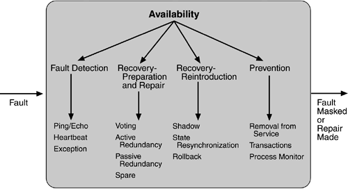

5.2 Availability Tactics
Recall the vocabulary for availability from Chapter 4. A failure occurs when the system no longer delivers a service that is consistent with its specification; this failure is observable by the system's users. A fault (or combination of faults) has the potential to cause a failure. Recall also that recovery or repair is an important aspect of availability. The tactics we discuss in this section will keep faults from becoming failures or at least bound the effects of the fault and make repair possible. We illustrate this in Figure 5.2.
Many of the tactics we discuss are available within standard execution environments such as operating systems, application servers, and database management systems. It is still important to understand the tactics used so that the effects of using a particular one can be considered during design and evaluation. All approaches to maintaining availability involve some type of redundancy, some type of health monitoring to detect a failure, and some type of recovery when a failure is detected. In some cases, the monitoring or recovery is automatic and in others it is manual.
We first consider fault detection. We then consider fault recovery and finally, briefly, fault prevention.
FAULT DETECTION
Three widely used tactics for recognizing faults are ping/echo, heartbeat, and exceptions.
Ping/echo.
One component issues a ping and expects to receive back an echo, within a predefined time, from the component under scrutiny. This can be used within a group of components mutually responsible for one task. It can also used be used by clients to ensure that a server object and the communication path to the server are operating within the expected performance bounds. "Ping/echo" fault detectors can be organized in a hierarchy, in which a lowest-level detector pings the software processes with which it shares a processor, and the higher-level fault detectors ping lower-level ones. This uses less communications bandwidth than a remote fault detector that pings all processes.
Heartbeat (dead man timer).
In this case one component emits a heartbeat message periodically and another component listens for it. If the heartbeat fails, the originating component is assumed to have failed and a fault correction component is notified. The heartbeat can also carry data. For example, an automated teller machine can periodically send the log of the last transaction to a server. This message not only acts as a heartbeat but also carries data to be processed.
Exceptions.
One method for recognizing faults is to encounter an exception, which is raised when one of the fault classes we discussed in Chapter 4 is recognized. The exception handler typically executes in the same process that introduced the exception.
The ping/echo and heartbeat tactics operate among distinct processes, and the exception tactic operates within a single process. The exception handler will usually perform a semantic transformation of the fault into a form that can be processed.
FAULT RECOVERY
Fault recovery consists of preparing for recovery and making the system repair. Some preparation and repair tactics follow.
Voting.
Processes running on redundant processors each take equivalent input and compute a simple output value that is sent to a voter. If the voter detects deviant behavior from a single processor, it fails it. The voting algorithm can be "majority rules" or "preferred component" or some other algorithm. This method is used to correct faulty operation of algorithms or failure of a processor and is often used in control systems. If all of the processors utilize the same algorithms, the redundancy detects only a processor fault and not an algorithm fault. Thus, if the consequence of a failure is extreme, such as potential loss of life, the redundant components can be diverse.
One extreme of diversity is that the software for each redundant component is developed by different teams and executes on dissimilar platforms. Less extreme is to develop a single software component on dissimilar platforms. Diversity is expensive to develop and maintain and is used only in exceptional circumstances, such as the control of surfaces on aircraft. It is usually used for control systems in which the outputs to the voter are straightforward and easy to classify as equivalent or deviant, the computations are cyclic, and all redundant components receive equivalent inputs from sensors. Diversity has no downtime when a failure occurs since the voter continues to operate. Variations on this approach include the Simplex approach, which uses the results of a "preferred" component unless they deviate from those of a "trusted" component, to which it defers. Synchronization among the redundant components is automatic since they are all assumed to be computing on the same set of inputs in parallel. Active redundancy (hot restart).
All redundant components respond to events in parallel. Consequently, they are all in the same state. The response from only one component is used (usually the first to respond), and the rest are discarded. When a fault occurs, the downtime of systems using this tactic is usually milliseconds since the backup is current and the only time to recover is the switching time. Active redundancy is often used in a client/server configuration, such as database management systems, where quick responses are necessary even when a fault occurs. In a highly available distributed system, the redundancy may be in the communication paths. For example, it may be desirable to use a LAN with a number of parallel paths and place each redundant component in a separate path. In this case, a single bridge or path failure will not make all of the system's components unavailable.
Synchronization is performed by ensuring that all messages to any redundant component are sent to all redundant components. If communication has a possibility of being lost (because of noisy or overloaded communication lines), a reliable transmission protocol can be used to recover. A reliable transmission protocol requires all recipients to acknowledge receipt together with some integrity indication such as a checksum. If the sender cannot verify that all recipients have received the message, it will resend the message to those components not acknowledging receipt. The resending of unreceived messages (possibly over different communication paths) continues until the sender marks the recipient as out of service. Passive redundancy (warm restart/dual redundancy/triple redundancy).
One component (the primary) responds to events and informs the other components (the standbys) of state updates they must make. When a fault occurs, the system must first ensure that the backup state is sufficiently fresh before resuming services. This approach is also used in control systems, often when the inputs come over communication channels or from sensors and have to be switched from the primary to the backup on failure. Chapter 6, describing an air traffic control example, shows a system using it. In the air traffic control system, the secondary decides when to take over from the primary, but in other systems this decision can be done in other components. This tactic depends on the standby components taking over reliably. Forcing switchovers periodically—for example, once a day or once a week—increases the availability of the system. Some database systems force a switch with storage of every new data item. The new data item is stored in a shadow page and the old page becomes a backup for recovery. In this case, the downtime can usually be limited to seconds.
Synchronization is the responsibility of the primary component, which may use atomic broadcasts to the secondaries to guarantee synchronization. Spare.
A standby spare computing platform is configured to replace many different failed components. It must be rebooted to the appropriate software configuration and have its state initialized when a failure occurs. Making a checkpoint of the system state to a persistent device periodically and logging all state changes to a persistent device allows for the spare to be set to the appropriate state. This is often used as the standby client workstation, where the user can move when a failure occurs. The downtime for this tactic is usually minutes.
There are tactics for repair that rely on component reintroduction. When a redundant component fails, it may be reintroduced after it has been corrected. Such tactics are shadow operation, state resynchronization, and rollback. Shadow operation.
A previously failed component may be run in "shadow mode" for a short time to make sure that it mimics the behavior of the working components before restoring it to service.
State resynchronization.
The passive and active redundancy tactics require the component being restored to have its state upgraded before its return to service. The updating approach will depend on the downtime that can be sustained, the size of the update, and the number of messages required for the update. A single message containing the state is preferable, if possible. Incremental state upgrades, with periods of service between increments, lead to complicated software.
Checkpoint/rollback.
A checkpoint is a recording of a consistent state created either periodically or in response to specific events. Sometimes a system fails in an unusual manner, with a detectably inconsistent state. In this case, the system should be restored using a previous checkpoint of a consistent state and a log of the transactions that occurred since the snapshot was taken.
FAULT PREVENTION
The following are some fault prevention tactics.
Removal from service.
This tactic removes a component of the system from operation to undergo some activities to prevent anticipated failures. One example is rebooting a component to prevent memory leaks from causing a failure. If this removal from service is automatic, an architectural strategy can be designed to support it. If it is manual, the system must be designed to support it.
Transactions.
A transaction is the bundling of several sequential steps such that the entire bundle can be undone at once. Transactions are used to prevent any data from being affected if one step in a process fails and also to prevent collisions among several simultaneous threads accessing the same data.
Process monitor.
Once a fault in a process has been detected, a monitoring process can delete the nonperforming process and create a new instance of it, initialized to some appropriate state as in the spare tactic.
Figure 5.3 summarizes the tactics just discussed.


|